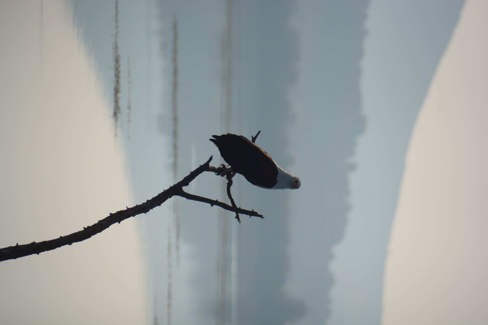

|  |
Photography is more than just simply clicking a button, it is an art form. It serves as a way for people to express them selves and to be creative. Each photograph tells a unique story through composition, lighting and subject matter. Photography can change the way an individual sees the world around them. Photography encourages creativity. It allows people to capture their unique experiences interpritations of the world. Through experimenting with different styles, techniques and genres - such as portrait, street photography, wildlife photography, etc. - it helps to cultivate imagination You do not need the most expensive or fancy camerra to take good photos. What you need is to understand the key concepts of photography |
|---|
Aperture can be defined as the opening in a lens through which light passes to enter the camera. The way I like to think about it is it helps to control the focal point.
The higher your apeture, the more of the foreground will be in focus and the lower your apeture, the more of the background will be in focus
|
Apeture setting |
What is in focus |
|---|